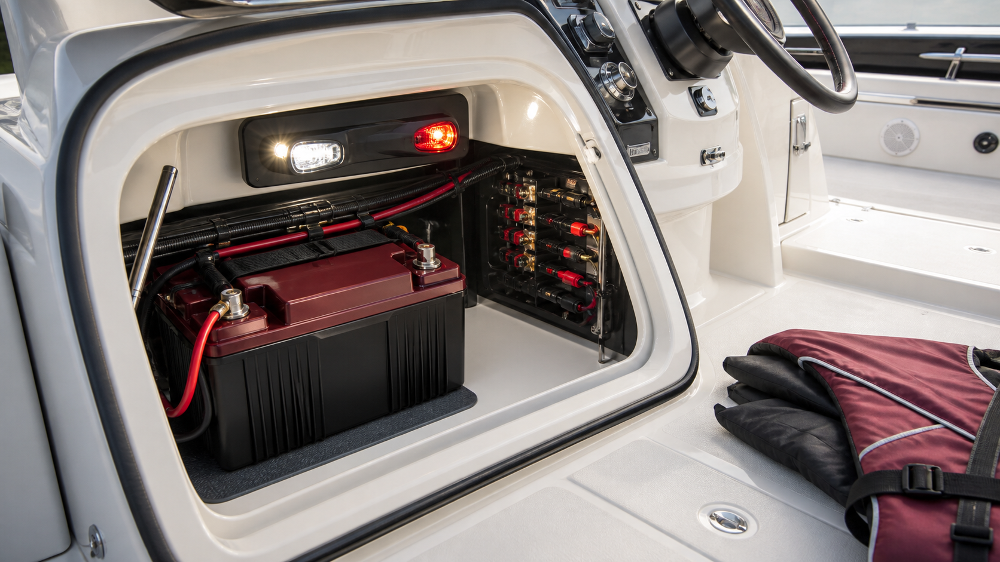

ЛОДКИ · 03
Электрика и безопасность перед выходом
Проверка электрооборудования и обязательного оснащения — часть подготовки, а не задача «на воде».

Аккумулятор и питание
- Проверьте заряд, клеммы, главный выключатель массы и предохранители.
- По очереди включите ходовые огни, помпу, эхолот, навигацию и зарядные порты.
- Осмотрите кабели у аккумулятора и в местах прохода через корпус.
Безопасное оснащение
Подберите жилет каждому человеку, проверьте якорь, швартовы, весло, аптечку и огнетушитель. Документы и телефон лучше хранить герметично.
Перед маршрутом
Уточните прогноз, запаситесь водой и сообщите близким маршрут. В незнакомой акватории держите запас по скорости и глубине.
Контроль перед отходом
Проверяйте цепи последовательно: аккумулятор, масса, предохранители, огни, помпа и навигация. Спасательные жилеты, якорь, швартовы и аптечка должны быть доступны сразу, а документы и телефон храниться герметично.
Неисправности, которые нельзя маскировать
- Повторно перегорающий предохранитель.
- Нагрев проводки, запах изоляции или окисленные контакты.
- Нестабильная работа помпы и ходовых огней.
Полезно после проверки
После любой доработки электрики подписывайте цепи и оставляйте схему подключения. Это упрощает сезонную проверку и помогает быстро найти неисправность вдали от базы.